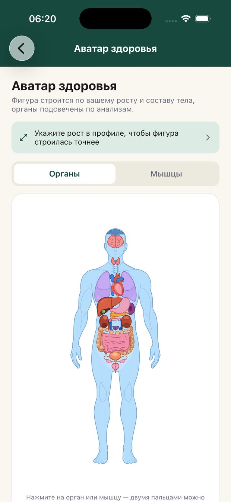
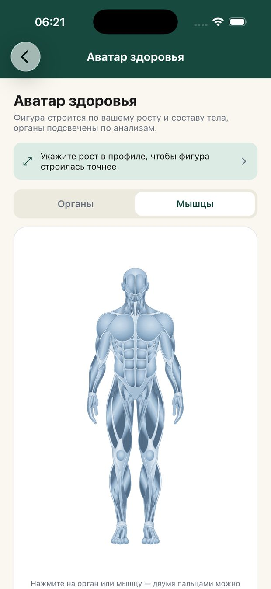

Не разовая консультация, а сопровождение: врач знает вашу историю, следит за показателями и сам напоминает, что пора сделать.
Закрытый пилот · iOS · по приглашениямМежду приёмами человек остаётся один на один с анализами и рекомендациями. MedPilot закрывает этот промежуток.
Какие обследования, когда и зачем. С напоминаниями, а не списком на бумажке.
Загружаете PDF или фото — получаете заключение простым языком. Каждое подписано врачом.
Тело, где органы подсвечены по вашим показателям. Видно, что в норме, а что требует внимания.
Анализы, заключения, назначения и записи собраны и структурированы, а не разбросаны по чатам.
Описываете, что беспокоит. Врач разбирает случай и отвечает — с историей обращения.
Сервис сам подсказывает, что пора сдать контроль или прийти на повтор.
Фигура строится по вашему росту и составу тела. Органы окрашены по результатам анализов; по любому можно нажать и увидеть, какие показатели за ним стоят.


Заполняете медкарту и загружаете имеющиеся результаты.
Личный врач разбирает данные и составляет план на год.
Напоминания, разбор новых анализов, ответы на вопросы.
План меняется вслед за показателями, а не остаётся на бумаге.
Сервис не заменяет очный приём и не ставит диагноз дистанционно: онлайн — это рекомендации и расшифровка результатов. При острых состояниях звоните 103.